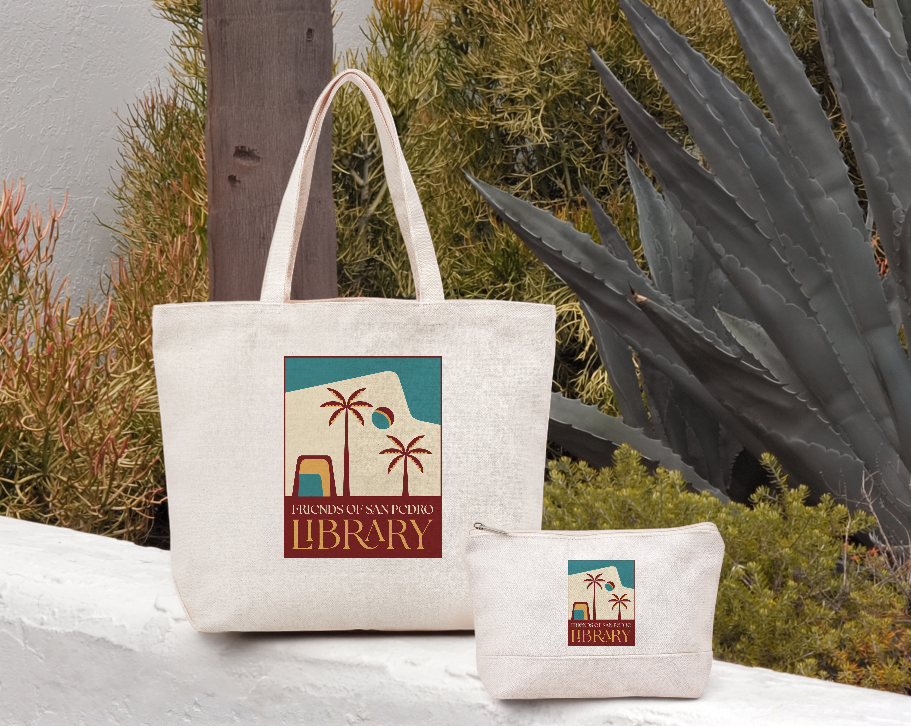
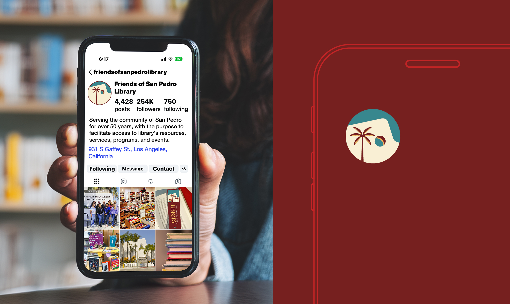

Friends of San Pedro Library revived the nonprofit after a long hiatus and is energized to bring back much-needed programs and events. Going forward, book clubs, book sales, and related activities will be a continued focus.
The San Pedro Library's architecture offers a modern take on Mission Revival style, echoing buildings seen throughout the surrounding landscape. I designed the branding to reflect the library's distinctive facade, with the goal of creating a connection with San Pedro residents that feels memorable and rooted in the community’s identity.



